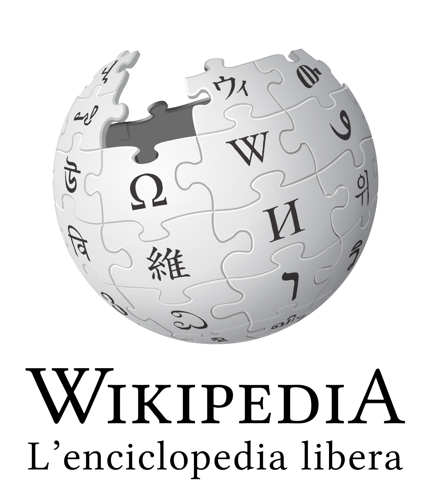
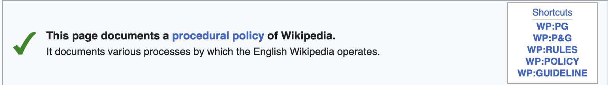
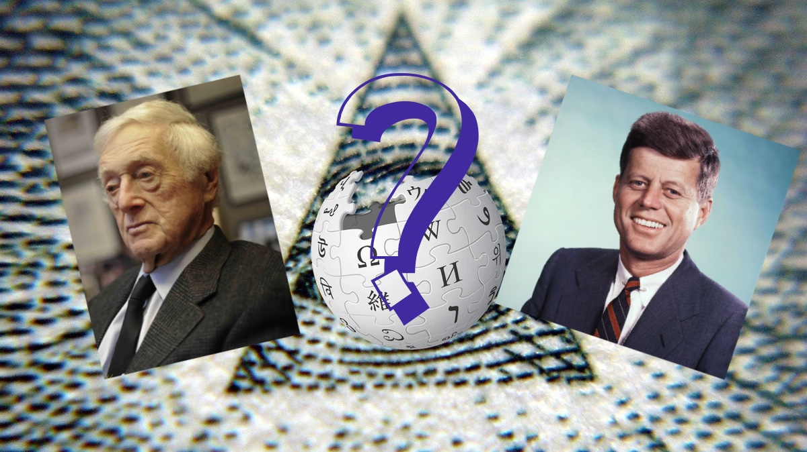
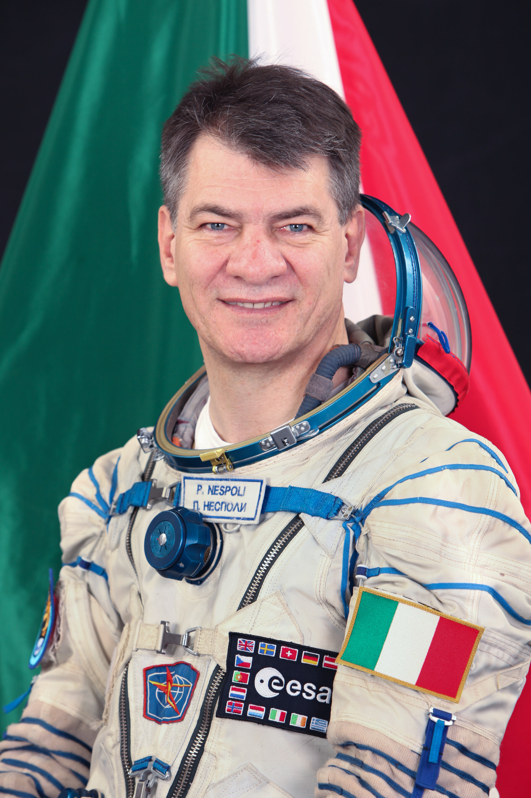

Nupedia (1999)
At 1st this was a side project of Nupedia (similar as Wikipedia idea but made by Users but reviewed before publication by Experts). It was founded by jimmy Wales. Meanwhile Wikipedia update his content in Realtime, Nupedia worked with a seven-step approval process. Nupedia was not a wiki; It was instead characterized by an extensive peer-review process (Something like a professional encyclopedias). Wikipedia was launch on the year 2001 and the year later (2002) gained a lot of popularity, and so on with another explosion In 2004;With also some translation in some languages. Wikipedia’s strong qualities made it an ambitious project with even the hope of a future print edition and surpassing the major encyclopedias.
WikipediaKeyRules

Wikipedia:a word that can divided in wiki(from Hawaiian: Fast) and paideia (from Ancient Greek: Formation)
Now a few key rules had to be put in place to avoid anarchy and maintain a clean site with a clean community.
There are four main key rules:
- Neutrality
- Verifiable
- Free
- Serious & Clear
Also there is a guideline for how to be a "friendly" user in Wikipedia 
Neutrality
Wikipedia's neutrality is a fundamental principle that emphasises the importance of maintaining a neutral and impartial perspective when writing articles. Wikipedia aspires to be a fair and objective source of information, providing users with an accurate and comprehensive overview of a given topic. This principle is enshrined in the official Wikipedia guidelines and is emphasised through various tools and procedures.
Verifable
Information presented on Wikipedia must be supported by reliable and verifiable sources. This implies that statements in
articles must be based on thorough research, academic publications, reports from recognised organisations, or other sources
of high credibility. The use of reliable sources is essential to ensure the accuracy and reliability of the information provided to
Wikipedia users.
Research and academic publications are a fundamental pillar for the validity of information on Wikipedia.
Free
The main feature that makes Wikipedia unique is its open licence, which allows free use, modification and distribution of content.
Wikipedia uses the Creative Commons Attribution-ShareAlike (CC BY-SA) licence, which means that anyone can use the texts and images on Wikipedia,
as long as certain conditions are met.
Anyone can use the work, provided the original author is correctly attributed.
Furthermore, if someone modifies the original work or creates a derivative, they must distribute it under the same licence,
maintaining freedom of use and sharing. The CC BY-SA licence is designed to promote open sharing of knowledge and facilitate global
collaboration.
Serious and Clear
Maintaining a "serious and clear" tone on Wikipedia emphasizes the importance of presenting information in a professional and straightforward manner.
Articles should avoid unnecessary humor, bias, or subjective language, contributing to the credibility of the content.
Clarity is essential, ensuring that articles are easily comprehensible to a diverse audience.
Complex concepts should be explained in accessible language, minimizing ambiguity and fostering a better understanding.
WikiProblem
Wikipedia has faced problems related to the quality and neutrality of content, the presence of unverifiable entries and the risk of vandalism by users. The difficulty of maintaining a continuous veracity. The Seigenthaler incident is an example of a Wikipedia incident; John Seigenthaler Sr., a journalist was related wrongly to the Kennedy assassination, This happened in 2005 but similar acts are not so rare also nowadays .
PauloNespoli(2012)
Paolo Nespoli is an Italian aerospace engineer and astronaut born on 6 April 1957 in Milan, Italy. After graduating in aerospace engineering from Milan Polytechnic in 1988, he pursued a career in the Italian Air Force, reaching the rank of lieutenant colonel. In 1998 he was selected as an astronaut by the European Space Agency (ESA) and completed training at the European Centre for Astronauts in Cologne, Germany. Paolo Nespoli was the first person to send a Audio from the Space for his Wikipedia Page.